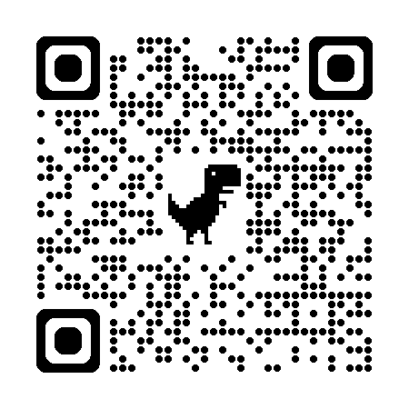

Ankle Plantar Flexion Strength Estimator (Empirical Model)
Predicts ankle plantar flexion strength for children, adults, and older adults based on field data.
Open AppSeated Calf Strength Estimator

Provides predicted seated calf strength values using linear mixed model based on measured PeakForce.
Open AppCoefficient of Variation
Calculates CV (three methods), reliability metrics (r or ICC), SEM, MDC, and magnitude-based change interpretation.
Open AppSWC & TE Calculator

Smallest Worthwhile Change (SWC) Calculator

Determines the SWC from trial data across subjects to assess meaningful change.
Open AppTypical Error

MDC Calculator
Computes Minimal Detectable Change (MDC) and MDC% for clinical interpretation.
Open AppPredictive Ankle Torque

Normative APFS
Provides normative ankle plantar flexion strength reference values for comparison.
Open AppBland-Altman Plot
Visualizes agreement between two measurement methods using Bland-Altman analysis.
Open AppTorque Calculator